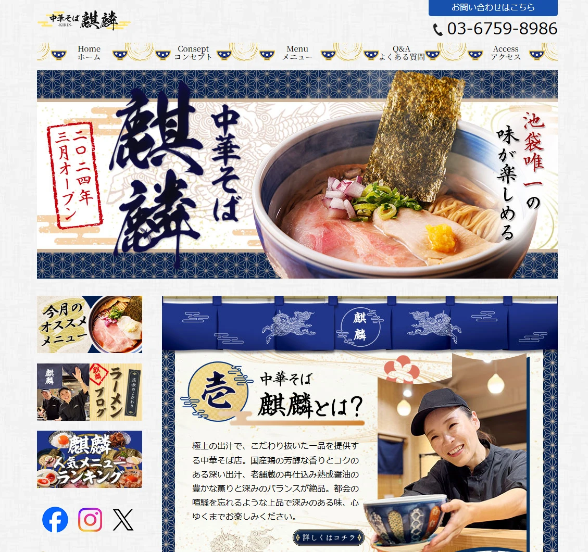
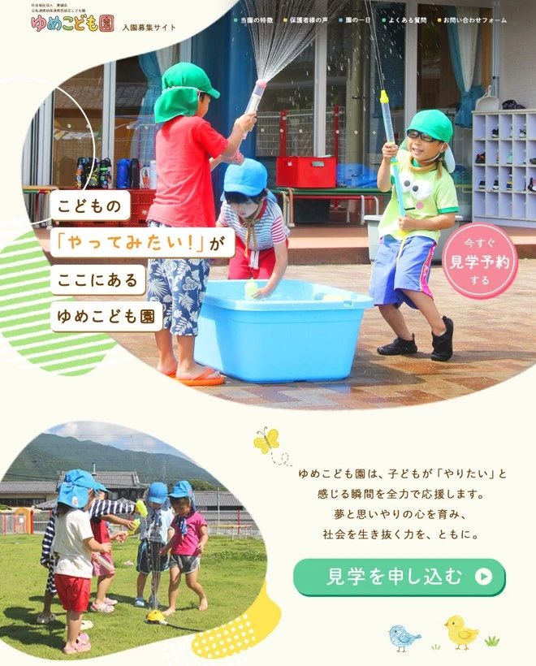
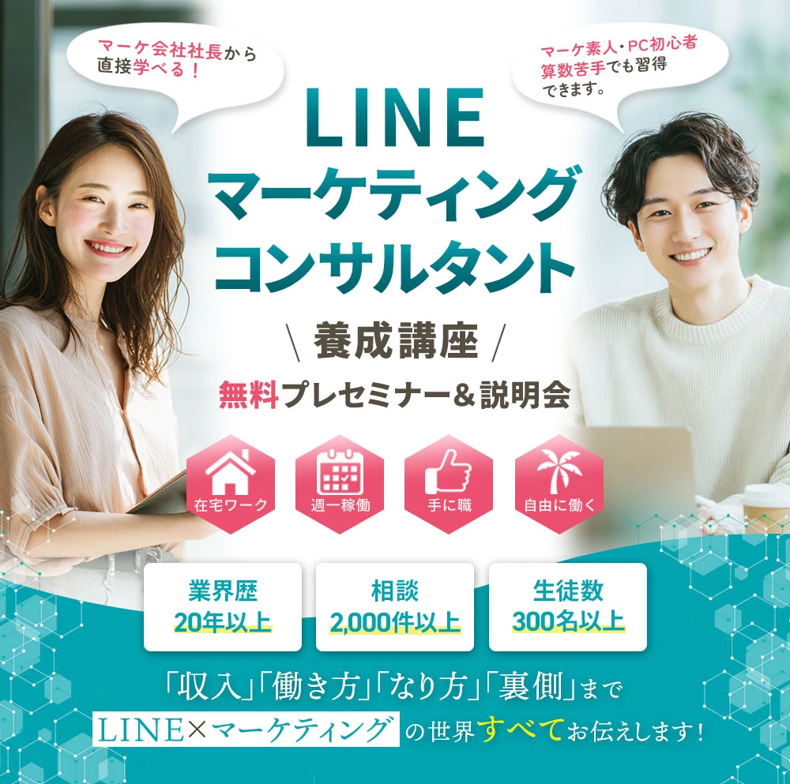
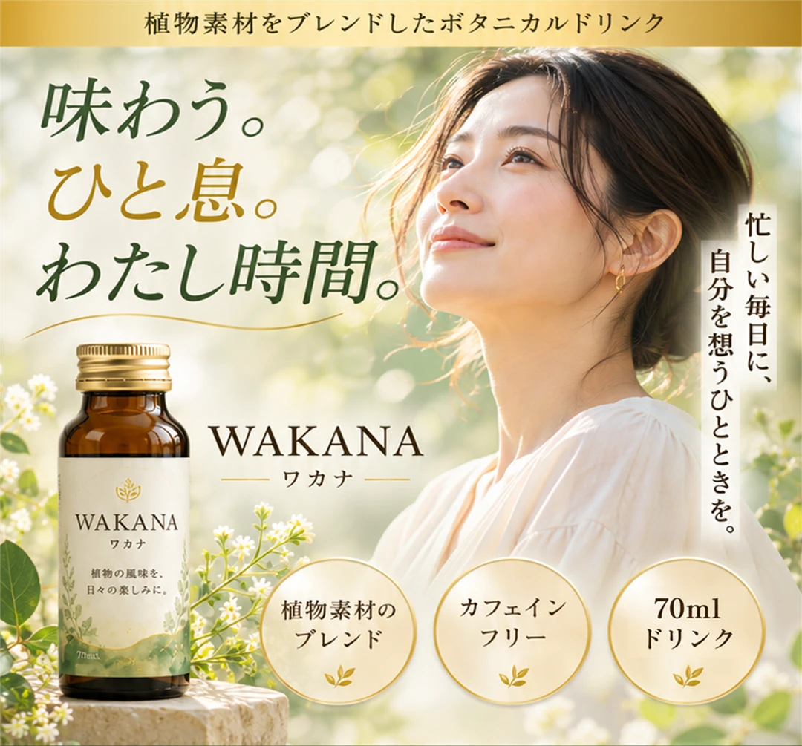
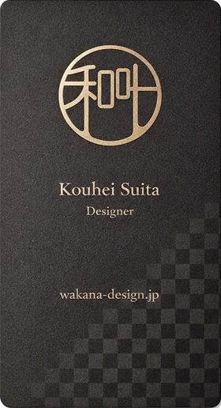
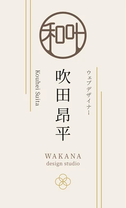
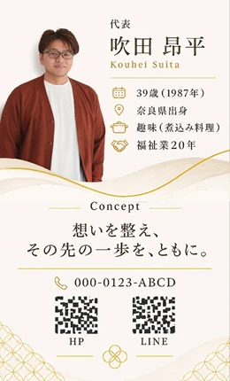
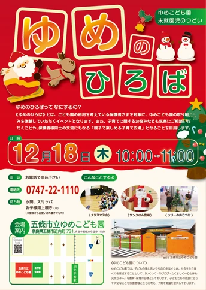
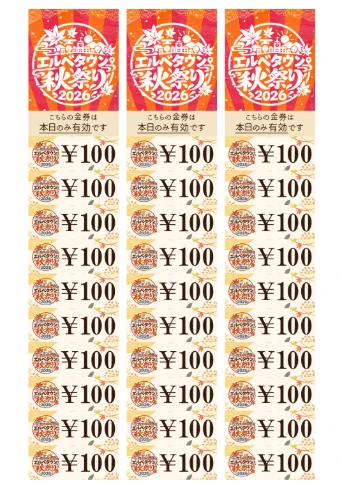

01 / HPデザイン
中華そば 麒麟
飲食店のWebサイトデザイン。料理の魅力と情報の届け方を考えた構成。
制作実績・作品紹介
大切にしている想いを、
どのようにカタチにしたのか。
伝えたい想いと、届けたい相手。
その先にある目的を考えながら、
一つひとつ丁寧に整えたデザインをご紹介します。

01 / HPデザイン
飲食店のWebサイトデザイン。料理の魅力と情報の届け方を考えた構成。
追加予定 / HPデザイン
作品データの追加を予定している枠です。
掲載予定
02 / LP・バナーデザイン
園の魅力を見せ、見学予約への導線を考えたLPとSNSバナーのデザイン資料。

03 / LPデザイン
講座の内容や参加後のイメージを伝えるためのLPデザイン。

04 / LPデザイン｜自主制作・架空商品
企業の商品PRを目的として制作したLPでの経験を土台に、架空のボタニカルドリンク「WAKANA」を題材として再構成した作品です。
商品の特徴を伝えるだけでなく、届けたい相手の日常や価値観を想像し、商品を取り入れた先の暮らしまでイメージできるデザインを目指しました。
本作品は自主制作の架空LPです。実在する企業・商品の公式広告ではありません。



05 / DTPデザイン
箔押しデザインと、和叶の名刺デザインを展示。

06 / DTPデザイン
季節のイベントの楽しさと、開催情報を届けるポスター。

07 / DTPデザイン
イベントで使う金券の印刷用デザイン。
※HP・LPの一覧にはファーストビューを使用し、クリック後は元の全体データを表示します。ゆめこども園は制作紹介PDFに含まれるLP冒頭部分からの切り出しです。
あなたの大切にしている想いを、あなたらしく届く形へ。
まだ言葉になっていなくても大丈夫です。
あなたの「想い」や「価値観」を一緒に整理し、
必要な人へきちんと伝わる環境へ落とし込む
お手伝いをいたします。